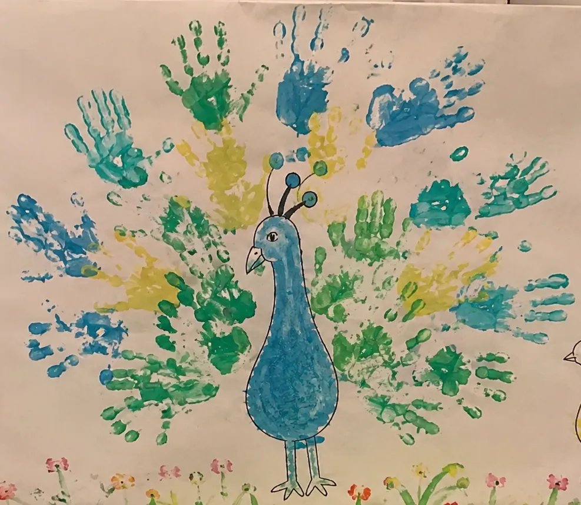
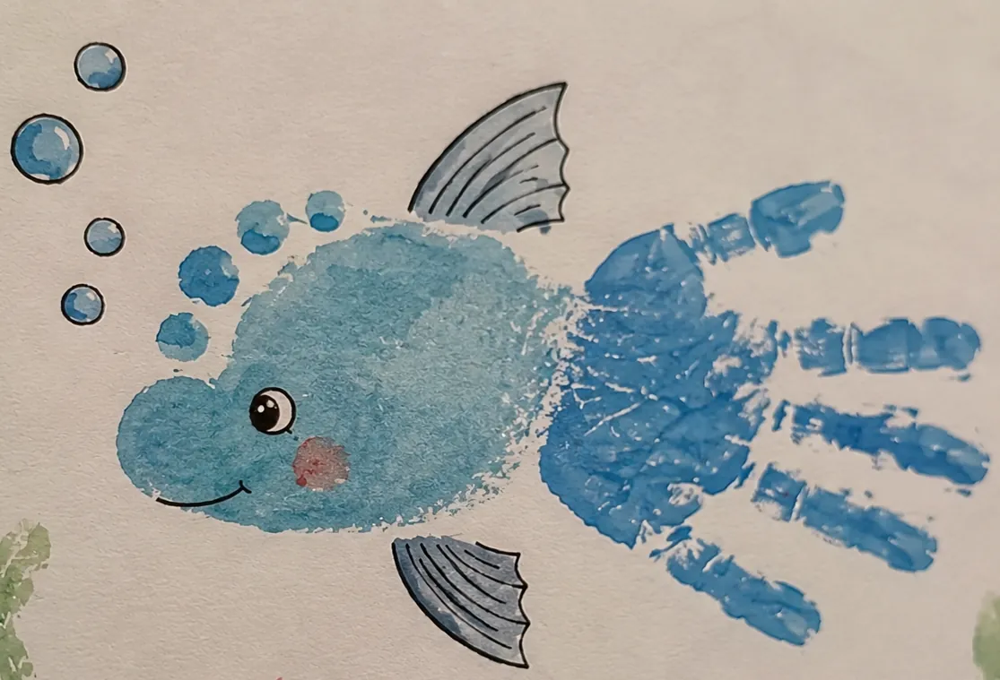
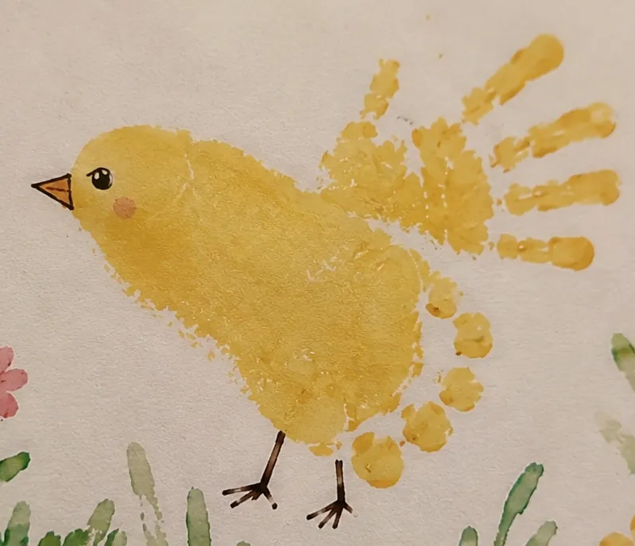

Enfants
Manipuler, observer, laisser des traces, associer les couleurs et inventer. Les propositions privilégient le plaisir de faire et la découverte artistique.
Des expériences artistiques accessibles et sensibles, pensées pour donner envie d’expérimenter, de manipuler les couleurs et les matières, et surtout de créer sans avoir peur de « ne pas savoir faire ».

Les ateliers de L’Atelier de Macete proposent un cadre guidé tout en laissant une vraie place à l’imagination. Les techniques deviennent des points de départ : chacun peut expérimenter, choisir, transformer et faire émerger son propre univers.
Les projets sont adaptés à l’âge des participants, au contexte de la structure, au temps disponible et au thème souhaité.
L’envie d’essayer suffit. L’accompagnement est conçu pour rendre la création accessible, valorisante et personnelle.
Manipuler, observer, laisser des traces, associer les couleurs et inventer. Les propositions privilégient le plaisir de faire et la découverte artistique.
Des projets plus personnels pour expérimenter des techniques, affirmer ses choix et créer une œuvre qui ne ressemble qu’à soi.
Des temps de création accessibles aux débutants, à vivre seul, en groupe ou en duo parent-enfant, dans une atmosphère conviviale et accompagnée.

Un atelier d’éveil artistique et sensoriel où les empreintes des enfants prennent place dans une fresque illustrée spécialement pour la structure.
Chaque enfant participe à son rythme. Main après main, trace après trace, une œuvre collective apparaît et reste ensuite comme souvenir de l’expérience.




À partir d’un portrait photographique imprimé en noir et blanc, chaque participant construit une œuvre personnelle en explorant l’aquarelle, les couleurs, les formes et les motifs.
Une technique de transfert permet de travailler le portrait sans avoir besoin de maîtriser le dessin. Le cadre est guidé étape par étape, puis chacun donne librement vie à son univers.


Traces Magiques et Couleurs de Soi sont deux concepts déjà développés, mais ils ne résument pas les possibilités. De nouveaux ateliers peuvent être imaginés autour d’une technique, d’un thème, d’une saison ou d’un projet porté par votre structure.
L’objectif reste le même : proposer une expérience adaptée au public, suffisamment guidée pour être accessible et suffisamment ouverte pour laisser une vraie liberté créative.
Le format, la durée, la technique et le niveau d’accompagnement sont définis selon votre public et votre projet.
Ateliers ponctuels, cycles et projets thématiques.
Propositions adaptées à l’âge et au rythme des enfants.
Créations individuelles ou collectives pour différents publics.
Formats conviviaux pour familles, adultes ou groupes intergénérationnels.
Chaque intervention est préparée en fonction du lieu, du public et de l’expérience recherchée.
Nous définissons le public, vos envies, vos contraintes et le contexte de l’intervention.
Le contenu, la durée et le matériel sont pensés en fonction de votre demande.
Les participants sont accompagnés dans un cadre bienveillant, avec le matériel nécessaire.
Individuelle ou collective, l’œuvre prolonge l’expérience une fois l’atelier terminé.
L’Atelier de Macete se déplace pour proposer des ateliers créatifs à Strasbourg et dans l’Eurométropole, à Haguenau, Brumath, Saverne, Obernai, Sélestat, Colmar, Mulhouse et plus largement dans le Bas-Rhin, le Haut-Rhin et toute l’Alsace, auprès des structures, associations, collectivités et organisateurs d’événements.
Pour la petite enfance, découvrez Traces Magiques, un atelier d’éveil artistique autour des empreintes et d’une fresque collective. Pour les adolescents, adultes et seniors, Couleurs de Soi transforme un portrait photographique en création personnelle autour des couleurs, motifs et symboles.
Parlez-moi de votre public, de votre lieu et de vos envies. Je pourrai vous proposer un atelier existant ou réfléchir à une création adaptée à votre projet.